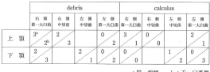

OHI-S（Oral Hygiene Index-Simplified）は、特定の6歯を対象とした簡略化口腔衛生指数。
| 部位 | 対象歯 | 診査面 |
|---|---|---|
| 上顎右側 | 第一大臼歯（6番） | 頬側面 |
| 上顎前歯 | 中切歯（1番） | 唇側面 |
| 上顎左側 | 第一大臼歯（6番） | 頬側面 |
| 下顎左側 | 第一大臼歯（6番） | 舌側面 |
| 下顎前歯 | 中切歯（1番） | 唇側面 |
| 下顎右側 | 第一大臼歯（6番） | 舌側面 |
注意：下顎大臼歯は舌側面を診査（頬側ではない）
DI-S = Debris点数の合計 ÷ 被験歯数
CI-S = Calculus点数の合計 ÷ 被験歯数
OHI-S = DI-S + CI-S
| 指標 | DI/CI各最大 | 合計最大 |
|---|---|---|
| OHI（全顎6ブロック） | 各6点 | 12点 |
| OHI-S（6歯のみ） | 各3点 | 6点 |
| 上顎右6 | 上顎1 | 上顎左6 | 下顎左6 | 下顎1 | 下顎右6 | |
|---|---|---|---|---|---|---|
| DI | 2 | 1 | 2 | 3 | 2 | 2 |
| CI | 1 | 0 | 1 | 2 | 1 | 1 |
DI-S = (2+1+2+3+2+2) ÷ 6 = 12 ÷ 6 = 2.0
CI-S = (1+0+1+2+1+1) ÷ 6 = 6 ÷ 6 = 1.0
OHI-S = 2.0 + 1.0 = 3.0
OHI記録の一部を表に示す。
OHI-Sの値はどれか。1つ選べ。

【解説】表からDebris（DI）とCalculus（CI）の値を読み取り、それぞれの平均を計算する。DI-S + CI-S = OHI-Sとなる。表の値を正確に読み取り、3.5が正解。計算問題では、DI-SとCI-Sを別々に計算してから合計することがポイント。